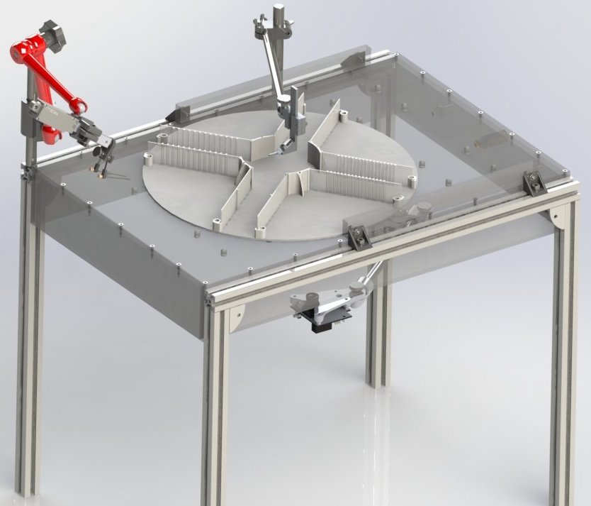

This website will guide you through the whole process of building an Airtrack setup (large platform version).
The Airtrack was first published in 2016, with a paper titled Air-Track: a real-world floating environment for active sensing in head-fixed mice. It was developed by the authors of the paper with the help of the Charité workshop (Alexander Schill). This documentation website was created by Fabio Reeh and reviewed by Julien Colomb, based on the existing documentation.

This guide is part of the output from the open.make project (see website for more information, including funding information). This project aims to further establish open hardware in academic research, and support scientist in the creation of FAIR research hardware.
Table of contents
Construction of the airtable
Precut of aluminium profile strut
Predrill of plexiglass
Glue and screw
Construction of the basic framework
Insertion of ball valves
Air flow and pressure control
Construction of platform tracking
Construction of linear actuator front
Construction of the rewarding system
Construction of the head fixation
Floating platform
Installation of scripts
Configuration of PixyCam
Setup of the electronics
List of all necessary components ( ,
,  )
)
About the Airtrack
To investigate the neuronal activities in ordinary behaviour, it's eligible to implement modern brain recording equipment. These modern technics frequently require head fixation. The Airtrack is one approach to facilitate analysing natural behaviour in its complexity. Behaviour is depended on permanent sensory feedback from various modalities and to provide the possibility of sensory perception in its totality is a central challenge. The Airtrack aims to facilitate these multiple sensory and motor modality approaches in combination with a simple setup, low costs and less computational processing. The shift from a virtual visual (air ball/ treadmill with VR) to somatosensory modality approach causes a natural tactile representation while having less computational needs besides no errors between perception and movement of the mice and corresponding virtual environment. The virtual environment approaches faces the difficulties of estimating the perceptual experience of the mice or other animals and it's probably impossible to match virtual reality and real world experience. The developers conclude that the Airtrack system is ideal for eliciting natural behaviour in concert with virtually any system for monitoring or manipulating brain activity.
The Airtrack was used to perform Go/No-Go and two-alternative forced choice tasks with mice.
As the system is in use within Larkum Lab and gets developed, we encourage you to check the recent publications to see new variants and applications.
Overview of the setup
The airtrack system consists out of a central air table with the possibility of modification. In this version, a mouse moves on a floating lightweight plus maze, while being head fixed in the center above the platform. Below the table a camera tracks the movement of the plus maze with different coloring on the bottom side of the platform. At one side of the table a moveable reward system is placed with two licking spots. To detect if a spot was licked, a capacitive sensor is used.
The lanes on the maze are equipped with different features to distinguish them and correspond with the tasks. They can either be smooth or with gratings etched. Further for the performed tasks, a LED and buzzer are installed to provide position feedback. The position tracking was done with a Pixy camera (CMUcam5 Image Sensor) by detecting different colouring on the bottom side of the plus maze.
The central table consists out of a plexiglass box with air flowing through. On the upper side many holes are placed to create an air cushion on the surface the platform can float on. The table is mounted on aluminium legs to reach the desired height and space for the camera. On the framework is a lot space to place e.g. further tracking devices. The computational tasks are performed with a Arduino Uno microcontroller.
Disclaimer: Construction complexity
Some parts are more difficult to construct than others. Mainly the central plexiglass box is difficult to build with an improvised work place. Precise cutting of the plexiglass is needed to ensure airtight manufacturing. Further, a workshop might use UV glue for the box which provides a higher quality.
If you have access to a workshop, we recommend you to get the air table constructed there. In general, it's better to have a large fraction of the Airtrack manufactured professionally.
Size and struts
The amount of strut profiles you need depends on the hight of the table, and how well you can cut the 2 m strut profiles into pieces. For the default table (height = 400 mm) it takes 6m (= 3 pieces). It is best practice to have more than you actually need, such that you get spares if the struts are incorrectly cut.